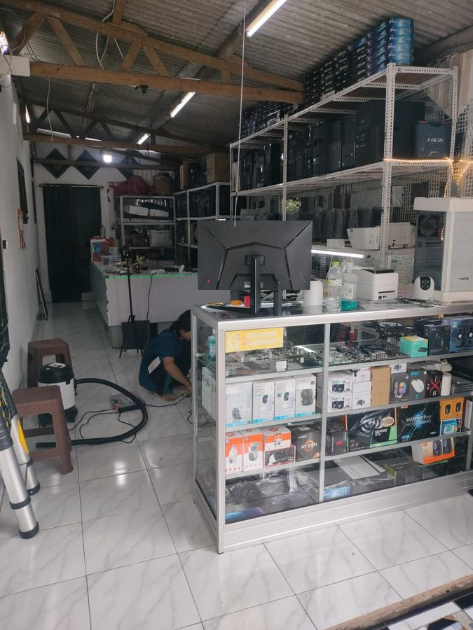

Servis laptop & PC, semua merk
Dikerjakan di bengkel sendiri di Jl. Keramat, Panjen. Tidak dioper ke tempat lain, jadi kami tahu persis barangmu ada di mana.
- Didiagnosa dulu, biayanya disebut sebelum apa pun dikerjakan. Kamu yang memutuskan lanjut atau tidak.
- Dapat kode servis untuk dilacak sendiri dari rumah, tanpa perlu menelepon toko.
- Garansi tertulis di nota, bukan janji lisan.
- Kalau menunggu sparepart, kami bilang apa adanya dan mengabari lewat WhatsApp begitu barangnya datang.

Alur kerja
Prosesnya begini
-
01
Cerita keluhannya
Lewat WhatsApp atau datang langsung. Gratis, tidak wajib jadi.
-
02
Diagnosa & harga
Kami sebutkan biayanya sebelum apa pun dikerjakan. Kamu yang putuskan.
-
03
Dikerjakan & diuji
Kamu dapat nomor tiket untuk memantau sendiri dari rumah.
-
04
Ambil + garansi
Garansi tertulis di nota, bukan janji lisan.
Sudah menyervis di sini?
Kode servismu bisa dicek sendiri
Ada di nota. Masukkan kodenya, kelihatan sampai mana pengerjaannya.
Dari pelanggan yang servis di sini
★★★★★
Sangat rekomendasi! Laptop mati total bawa ke sini langsung ditangani teknisi profesional. Pengerjaan cepat, jujur, dan harganya terjangkau. Laptop kembali lancar jaya! Terima kasih utama computer
★★★★★
Barangnya sampai dengan aman,kondisi laptop mulus..penjual responsif dan amanah